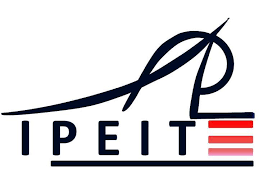

Nos Parcours académiques
|  | ||
|---|---|---|
Mon expérience au lycée Menzah 6 a été une période formatrice et mémorable de ma vie académique. Les enseignants dévoués et compétents ont créé un environnement propice à l'apprentissage, encourageant la curiosité intellectuelle et l'engagement actif des étudiants. Les diverses matières enseignées, allant des sciences humaines aux disciplines scientifiques, ont contribué à mon développement intellectuel et ont nourri ma passion pour la connaissance. Les activités parascolaires, comme les clubs et les événements culturels, ont également joué un rôle important dans l'enrichissement de mon expérience au lycée. En outre, les amitiés forgées et les leçons apprises sur le plan personnel ont contribué à ma croissance globale. Ainsi, le lycée Menzah 6 a été bien plus qu'une institution éducative pour moi ; c'était un lieu où j'ai cultivé des compétences, des souvenirs et une compréhension approfondie de moi-même. |
Mon expérience à l'École Préparatoire d'Ingénieur IPEIT a été une période enrichissante marquée par des défis stimulants et des apprentissages approfondis. Les cours dispensés par des enseignants compétents et passionnés m'ont permis d'acquérir une solide base théorique dans les domaines clés de l'ingénierie. Les projets pratiques et les travaux de groupe ont favorisé le développement de compétences collaboratives et la résolution de problèmes concrets. Les nombreuses activités parascolaires, telles que des conférences et des ateliers, ont élargi mes horizons et m'ont permis de découvrir des applications concrètes des connaissances acquises en classe. En somme, mon passage à l'IPEIT a été une étape cruciale dans mon parcours académique, contribuant de manière significative à ma formation en tant qu'ingénieur. |
Mon premier semestre à l'École d'Ingénieur ESPRIT a été une période intense et gratifiante, marquée par de nouvelles découvertes et des défis stimulants. Les cours dispensés par des professeurs qualifiés ont approfondi mes connaissances dans des domaines technologiques avancés, tandis que les travaux pratiques m'ont offert une perspective concrète sur l'application des concepts théoriques. La diversité des projets d'équipe a favorisé le développement de compétences collaboratives et la capacité à résoudre des problèmes complexes. Les ressources technologiques modernes m'ont permis d'accéder à un environnement d'apprentissage innovant. Les interactions avec mes camarades de classe, provenant de divers horizons, ont enrichi mon expérience sociale et élargi mes perspectives. Globalement, ce premier semestre à l'ESPRIT a constitué une étape cruciale dans mon parcours académique, me préparant à relever avec confiance les futurs défis d'une carrière en ingénierie. |